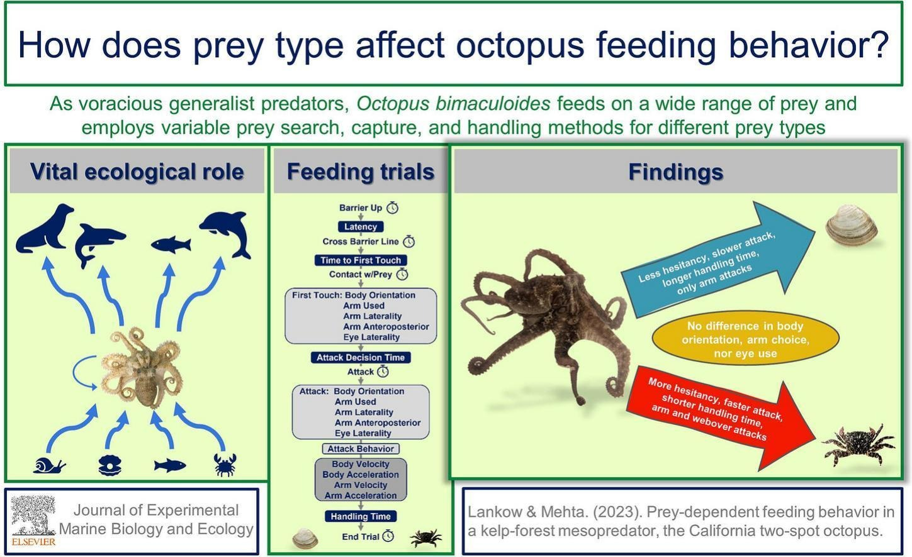

Natural Feeding Ecology
The Giant Pacific Octopus is a carnivorous, opportunistic predator. In the wild, its diet is mainly made up of crustaceans, molluscs and fish, including crabs, clams, scallops, shrimp, fish and squid. This is important in captivity because the diet should not rely on only one food type. A varied marine diet is more likely to reflect natural feeding behaviour and reduce the risk of nutritional imbalance (AZA Aquatic Invertebrate Taxon Advisory Group, 2014; Animal Diversity Web, 2011).
This species usually handles prey with its arms and suckers before using the beak and radula to process food. Feeding should therefore allow some manipulation of food rather than only offering small, soft pieces. This supports normal feeding behaviour and gives staff a useful opportunity to observe strength, coordination and appetite.
Proposed Captive Diet
The diet below is designed for an adult Giant Pacific Octopus in a public aquarium setting. Exact quantities should be adjusted according to body weight, appetite, water temperature, activity level and life stage.
Table 1. Proposed captive diet for an adult Giant Pacific Octopus.
| Diet item | Role in the diet | Suggested use | Practical notes |
|---|---|---|---|
| Crab pieces / whole small crab | High-value natural prey item; supports manipulation and natural feeding behaviour. | 2–3 feeds per week where available. | Use marine-sourced crab. Remove sharp or unsafe shell fragments if needed. |
| Clams, mussels or scallops | Reflects natural mollusc-based feeding and adds variety. | Regular rotation within the weekly diet. | Can be offered in shell occasionally if safe, as this encourages handling and investigation. |
| Squid | Good marine protein source and easy to portion. | 1–2 feeds per week. | Should not be the only main food item because variety is important. |
| Marine fish such as herring, smelt or fish fillet | Provides protein and energy; commonly used in aquarium diets. | Use as part of rotation, not as a single staple. | Frozen fish should be stored correctly and thawed safely before feeding. |
| Shrimp or prawn | Useful smaller item for appetite checks, training and close observation. | Occasional feed or monitoring item. | Useful when staff need to confirm feeding response quickly. |
Prey Type and Feeding Behaviour
Feeding behaviour in octopus species may vary depending on prey type, handling difficulty and capture strategy. Research on octopus feeding ecology suggests that prey characteristics can influence hesitation time, attack behaviour and prey-handling duration. This supports the importance of providing dietary variety and behavioural feeding opportunities in captive management (Lankow & Mehta, 2023).

Figure 2. Prey-dependent feeding behaviour observed in octopus species. Adapted from Lankow & Mehta (2023), Journal of Experimental Marine Biology and Ecology.
Nutrient and Energy Considerations
Published nutrient requirements for Giant Pacific Octopus are limited, so diet planning should be based on natural prey composition, professional aquarium guidance and careful monitoring of body condition. A mixed diet of marine crustaceans, molluscs and fish is recommended because it spreads nutritional risk better than relying on one item.
Table 2. Nutrient and energy management considerations.
| Nutritional factor | Management recommendation | Reason |
|---|---|---|
| Protein | Use high-quality marine animal protein from crab, molluscs, squid and fish. | Octopuses are carnivorous and need protein-rich prey to support growth, tissue maintenance and normal activity. |
| Energy | Adjust food amounts based on appetite, body condition and activity rather than using a fixed amount only. | Energy need can change with temperature, growth, reproductive condition and senescence. |
| Vitamins and minerals | Use varied whole marine prey where possible and review supplementation with the veterinarian or nutritionist. | Frozen storage and limited diet variety may reduce micronutrient reliability over time. |
| Food quality | Use human-grade or aquarium-approved seafood, stored frozen and thawed hygienically before feeding. | Poor-quality seafood increases the risk of spoilage, reduced intake and water contamination. |
Supplementation and Nutritional Support
Supplementation may be needed because frozen seafood diets can lose some vitamins and micronutrients during storage. Exact supplementation requirements for Giant Pacific Octopus are not fully established, so the safest approach is to use a varied whole-prey diet and only add supplements after veterinary or nutrition review. This avoids relying too heavily on artificial supplementation while still reducing the risk of deficiency (AZA Aquatic Invertebrate Taxon Advisory Group, 2014).
Table 3. Supplementation and nutritional management considerations.
| Supplement / Support | Purpose | Management consideration |
|---|---|---|
| Vitamin-enriched seafood | Supports micronutrient intake in frozen diets. | Use only where recommended by veterinary or nutrition staff. |
| Whole-prey feeding | Provides a more natural nutrient profile. | Useful for both dietary balance and feeding behaviour. |
| Shellfish rotation | Adds variety and minerals within the weekly diet. | Should be included as part of rotation, not as the only food source. |
Daily Feed Ratio and Portion Management
Feeding amounts should be flexible rather than fixed because appetite can change with body size, water temperature, activity level, reproductive status and ageing. As a practical starting point, adult octopuses may be offered food equivalent to approximately 2–5% of body weight per day, then adjusted using appetite, body condition and waste output. Overfeeding should be avoided because uneaten food can quickly damage water quality in closed marine systems.
Table 4. Example daily feeding ratio guidance.
| Condition | Suggested feeding approach | Monitoring requirement |
|---|---|---|
| Normal body condition | Maintain regular varied diet with stable intake. | Continue routine feeding and behaviour records. |
| Reduced appetite | Offer smaller preferred prey items. | Check water quality and review behaviour. |
| Higher activity or growth | Increase quantity gradually if needed. | Monitor body condition and waste production. |
| Senescence or decline | Adjust expectations according to welfare status. | Increase monitoring and veterinary involvement. |
Feeding Schedule
Feeding should be regular but flexible. The aim is to maintain good body condition without overfeeding, as uneaten food can quickly affect water quality in a closed aquarium system.
- Adult feeding frequency: Offer food once daily or several times per week depending on appetite, body condition and institutional practice.
- Food rotation: Rotate crab, molluscs, squid, fish and shrimp across the week to avoid dependence on one food item.
- Feeding method: Offer some items using tongs or target feeding so keepers can confirm intake and assess grip strength.
- Behavioural value: Occasionally provide food in a way that requires handling or investigation, where hygiene and safety allow.
- Uneaten food: Remove refused food quickly to protect water quality.
Feed Preparation and Feed Management
Proper feed preparation is essential because poor-quality seafood or incorrect storage can increase bacterial contamination, reduce palatability and harm water quality. Frozen food should be thawed gradually under refrigerated conditions before feeding. Repeated freeze-thaw cycles should be avoided because they may reduce food quality and increase spoilage risk.
Table 5. Feed preparation and management procedures.
| Management area | Recommended practice |
|---|---|
| Food storage | Store seafood frozen with clear delivery and expiry dates. |
| Thawing process | Thaw under refrigerated hygienic conditions rather than at room temperature. |
| Feed preparation | Use dedicated preparation tools and surfaces to reduce contamination risk. |
| Uneaten food | Remove uneaten prey promptly to protect water quality. |
| Daily records | Record food type, quantity offered, intake response and abnormal behaviour. |
Health and Behaviour Effects
A suitable diet should support normal feeding behaviour, stable body condition and strong feeding response. Reduced appetite can be an early sign of poor water quality, stress, illness or natural senescence. For this reason, feeding records should be treated as a health-monitoring tool, not just a husbandry routine.
Table 6. Feeding-response indicators and recommended actions.
| Observation | Possible meaning | Recommended action |
|---|---|---|
| Sudden food refusal | Stress, water-quality issue, illness or senescence. | Check water parameters, review recent husbandry changes and inform senior staff if refusal continues. |
| Weak grip or poor prey handling | Possible health decline, injury or reduced strength. | Record clearly and request veterinary review if repeated. |
| Uneaten food left in tank | Overfeeding or reduced appetite. | Remove food, reduce next portion and review feeding records. |
| Rapid body condition change | Diet quantity may not match energy need. | Adjust ration after review by aquarist, curator and veterinarian. |
Food Intake Monitoring
Every feed should be recorded because appetite changes are one of the easiest early warning signs to detect. Records should be simple, consistent and reviewed weekly.
Table 7. Food intake monitoring approach.
| Record | Frequency | Action threshold |
|---|---|---|
| Food type and amount offered | Every feed | Review if intake drops below normal pattern for more than 48 hours. |
| Food refused or left uneaten | Every feed | Remove food immediately and check water quality. |
| Feeding response and grip strength | Every feed | Report repeated weak response or abnormal handling. |
| Body condition / weight estimate | Weekly to monthly, depending on facility method | Investigate visible weight loss, bloating or rapid body condition change. |
Cost, Storage and Preparation
The proposed diet is realistic for public aquariums because most items can be obtained through commercial frozen seafood suppliers. Prices may fluctuate seasonally, particularly for crab and shellfish. Based on UK seafood supplier pricing, the average feeding cost for an adult Giant Pacific Octopus is estimated at approximately £8–£20 per day, depending on prey variety, portion size and sourcing method.
Table 8. Approximate food cost and storage requirements.
| Food item | Approximate UK cost | Storage recommendation |
|---|---|---|
| Frozen squid | Approximately £4–£8 per kg | Store frozen at -18°C and thaw under refrigeration before use. |
| Marine fish | Approximately £5–£12 per kg | Keep frozen and use within supplier guidance period. |
| Crab / shellfish | Approximately £10–£25 per kg | Store frozen or chilled depending on product type and supplier instructions. |
| Shrimp or prawn | Approximately £6–£15 per kg | Store frozen and avoid repeated thaw-freeze cycles. |
- Store seafood frozen and clearly labelled with delivery and expiry dates.
- Thaw food gradually under refrigerated conditions rather than at room temperature.
- Use dedicated preparation surfaces and tools to reduce contamination risk.
- Discard seafood showing freezer burn, discolouration or strong odour.
- Maintain feeding records alongside health and water-quality monitoring records.